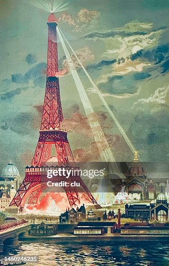
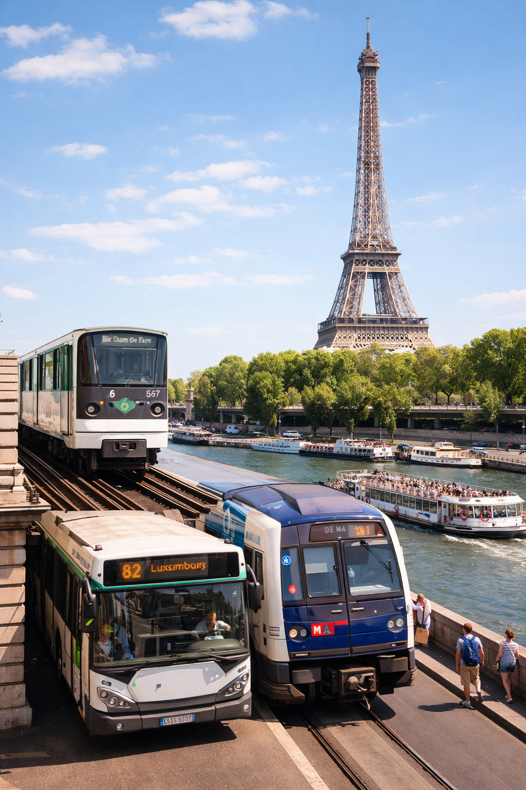

相關歷史
Eiffel Tower 位於 Paris 市中心，是法國最具代表性的地標之一，也是世界上最著名的建築之一。 📜 2. 相關歷史 埃菲爾鐵塔建於1889年，為紀念 Exposition Universelle 1889（世界博覽會）而建。 設計者：Gustave Eiffel 當時曾被批評「醜陋」 現已成為法國象徵 👉 從爭議建築變成世界奇蹟。。
世界上最著名的建築之一

Eiffel Tower 位於 Paris 市中心，是法國最具代表性的地標之一，也是世界上最著名的建築之一。 📜 2. 相關歷史 埃菲爾鐵塔建於1889年，為紀念 Exposition Universelle 1889（世界博覽會）而建。 設計者：Gustave Eiffel 當時曾被批評「醜陋」 現已成為法國象徵 👉 從爭議建築變成世界奇蹟。。
🌆 觀景台：可俯瞰整個巴黎 🌙 夜間燈光秀：晚上每小時閃爍，非常浪漫 📸 打卡熱點：世界知名拍照地點 🍽️ 塔上餐廳：可邊用餐邊欣賞美景 👉 特別適合情侶與攝影愛好者。
在鐵塔附近可以品嚐到經典法國料理： 🥐 Croissant（牛角包） 🥩 Steak frites（牛排薯條） 🍮 Crème brûlée（焦糖布丁） 🐌 Escargot（法式蝸牛） 👉 周邊有很多咖啡館與高級餐廳，非常有法式氛圍。。

🚇 5. 交通方法 前往埃菲爾鐵塔非常方便： 🚇 地鐵： 乘搭巴黎地鐵到 Bir-Hakeim站 🚆 RER火車： 到 Champ de Mars站 🚌 巴士：多條路線可達 🚶 步行：沿著塞納河散步前往，非常浪漫 👉 建議傍晚前往，可同時欣賞日景＋夜景。。